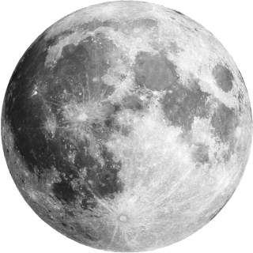

This website will take your date and go straight to NASA's archives to show it specifically to you!
You would be able to save the picture to favourites and, if want, send it to your e-mail from fav list.
The website utilizes NASA’s open API to access its archives, which contain a vast collection of images along with detailed information about them. While the European Space Agency (ESA) also maintains such archives, NASA’s archives are much better suited for this particular purpose. NASA even publishes images captured by European Space Agency satellites. You can enter any date, and the site will automatically query the archives to display an image taken on that exact day.